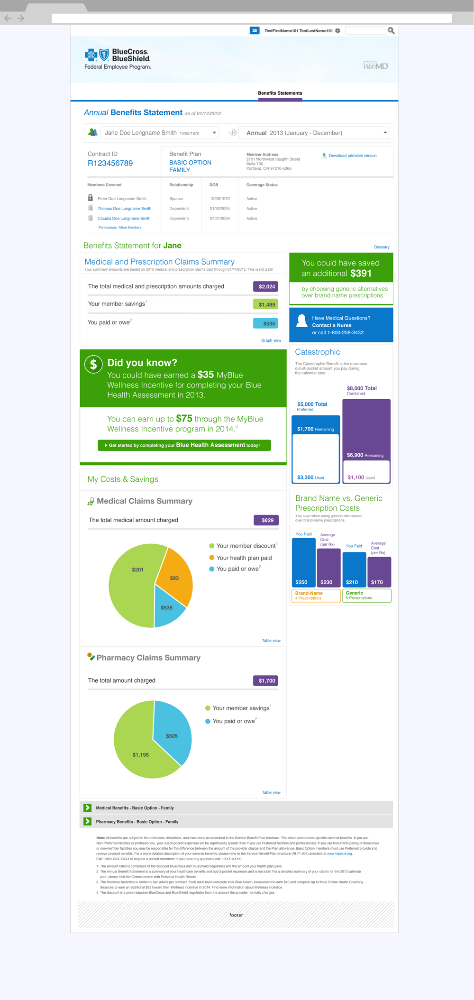
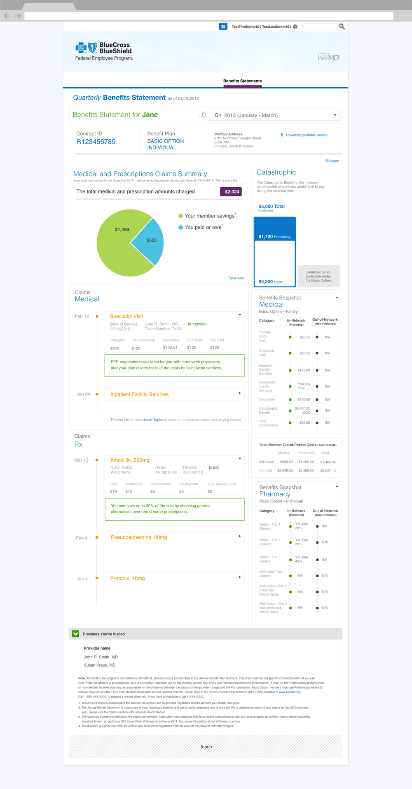

BlueCross BlueShield Association · 2014
FEP Member Statement UX
The BlueCross BlueShield Federal Employee Program covers millions of federal employees, retirees and their families. Their benefit statement was a dense list of claims and totals that answered the plan's questions, not the member's. I redesigned the online Annual and Quarterly Benefits Statement so a member can see in one screen what their care cost, what the plan saved them, what they still owe toward their out-of-pocket maximum, and where they could save more.
Client
BCBSA Federal Employee Program, via WebMD Health Services
Timeline
2014
Role
UX Designer
Team
Product manager, FEP business stakeholders, claims data engineers, visual design
Product area
Member portal · Benefits statement · Claims and cost data
Focus
Healthcare · Enterprise · Data visualization
![Top of the redesigned Annual Benefits Statement in a browser. The BlueCross BlueShield Federal Employee Program header, then a member picker set to Jane Doe Longname Smith and a period picker set to Annual 2013, January to December. Below, Contract ID R123456789, Benefit Plan Basic Option Family, the member address and a Download printable version link, and a table of covered members with relationship, date of birth and coverage status. Then Benefits Statement for Jane: a claims summary with $2,024 charged, $1,489 member savings and $535 paid or owed, beside a green panel reading You could have saved an additional $391 by choosing generic alternatives, and a blue Contact a Nurse panel](../assets/img/case/bcbsa-fep-member-statement/annual-cover.png)
In one line
Federal employees got a benefit statement that listed claims but didn't explain them. I redesigned it around three numbers every member understands: what was charged, what you saved, what you paid. Everything else (the out-of-pocket maximum, claim details, plan coverage) sits below those numbers, and the statement points out where the member could save money next time.
Context and the problem
The Federal Employee Program (FEP) is the Blue Cross and Blue Shield plan for U.S. government workers and retirees. Members range from young staff to retirees managing several conditions, and many cover a spouse and children on one contract.
The benefit statement is meant to answer simple questions: How much did our care cost this year? How much did my plan pay? How close am I to my maximum? The existing statement answered them in insurance language (allowance, coinsurance, catastrophic), in long tables, one claim at a time. Members couldn't see the total picture, so they called customer service, and a statement meant to reduce calls was generating them.
The business needed a statement that showed members the value of their plan, reduced calls about bills and coverage, and encouraged cheaper choices such as generic drugs, in-network providers and the Blue Health Assessment wellness incentive.
The constraints:
- Legacy claims data. Numbers came from existing claims systems with processing delays, so every view had to say which date the data was current to (as of 01/14/2013).
- Regulated language. Legal notes, footnotes and the This is not a bill disclaimer had to stay, and terms had to match the Service Benefit Plan brochure.
- Two plan options, family and individual contracts. Basic Option and Standard Option have different rules. For example, Basic Option has no combined catastrophic maximum. The layout had to work in every case.
- Privacy within a family. A contract holder can see some family members' claims but not others, depending on permissions.
- Many stakeholders. BCBSA, FEP operations, legal and the platform team all had a say in what appeared and how it was worded.
My role and what I owned
I was the UX designer on the online statement, from information architecture through high-fidelity comps.
- I owned the information hierarchy of the statement, the Annual and Quarterly layouts, the summary and savings modules, the cost charts, the claims timeline, the Benefits Snapshot and the high-fidelity comps shown here.
- Product management and FEP stakeholders owned scope, content rules and sign-off. Legal owned the notes and disclaimers.
- Engineering owned the claims data feeds and calculations. Visual design set the BCBS and WebMD look.
These are my original design comps. Member names, addresses, contract IDs, claims and dollar amounts are sample data.
Goals, and how we'd know
We agreed on what success looked like before designing layouts:
- Answer the main question in five seconds. A member can say what they paid and what the plan saved them without scrolling.
- Fewer calls. Fewer calls to customer service asking what a statement or claim means.
- Show the plan's value. Member savings are as visible as member costs.
- Encourage cheaper choices. Members notice and use generic drugs, in-network providers and wellness incentives.
What we learned in research
I reviewed the existing statement with FEP stakeholders, listened to the most common customer service call topics, and walked members through their own statements. Three findings changed the design.
1. Members ask three questions, in the same order
What did it cost? What did the plan cover? What do I owe? The old statement answered them in the order the claims system produced them. So every statement now opens with three rows (charged, member savings, paid or owed), each with a colored total that is used for the same meaning in every chart below.
2. "Catastrophic" means nothing to most people
The out-of-pocket maximum is the most important number for a member with a large bill, but catastrophic benefit sounded like disaster coverage. So it became a progress bar showing used and remaining, with a one-line explanation (the maximum out-of-pocket amount you pay during the calendar year).
3. Savings only change behavior when they are specific
A general reminder to use generics was ignored. A number tied to the member's own prescriptions was not. So the statement calculates what this member could have saved (You could have saved an additional $391) and places it next to their costs.
Strategy and the decisions that mattered
Decision 1: Summary first, claims second
The alternative was to keep the claims list as the main content and add a total at the top. I argued for reversing it: the statement leads with the summary, and claims become supporting detail. Stakeholders worried that members would think claims were missing. We kept every claim one level down and linked to it from the summary with Graph view and Table view.
![Annual statement modules. On the left, the Medical and Prescription Claims Summary: total charged $2,024 in a purple tag, member savings $1,489 in green, paid or owed $535 in blue, with a Graph view link. Below it a green Did you know panel: You could have earned a $35 MyBlue Wellness Incentive for completing your Blue Health Assessment in 2013, you can earn up to $75 in 2014, with a Get started button. On the right, the $391 generic savings panel, a Contact a Nurse panel, and a Catastrophic chart with two bars: Preferred $5,000 total with $3,300 used and $1,700 remaining, and Combined $8,000 total with $1,100 used and $6,900 remaining](../assets/img/case/bcbsa-fep-member-statement/annual-summary.png)
Decision 2: Point out missed savings, not just past spending
A statement usually looks backward. We added modules that look forward: the generic drug savings figure, a Did you know? panel for the $35 wellness incentive the member missed and the $75 available next year, and Contact a Nurse for members with questions. Legal and operations were cautious about promotional content in an official document. We agreed on a rule: every message had to be based on the member's own data and link to a specific action.
Decision 3: Show costs as proportions
Members don't compare $829 with $201 in their heads. The My Costs & Savings section splits medical and pharmacy costs into pie charts (member discount, health plan paid, you paid), and the Brand Name vs. Generic chart compares what the member paid with the average cost per prescription. Each chart has a Table view for exact figures and for screen readers.

Decision 4: One system, two statements
The Annual statement covers the whole family for the year. The Quarterly statement covers one person for three months and needs more detail. Instead of two separate designs, both use the same modules. The header, summary and catastrophic bar stay the same; Quarterly replaces the cost charts with a claims timeline and a benefits reference. When a rule doesn't apply, such as the combined maximum under Basic Option, the module says so rather than disappearing.

Design process and solution
Claims as a timeline
In the Quarterly view, medical and pharmacy claims appear on a date timeline. Each row shows the service or drug name and opens to show the details: provider, network status, charged, plan allowance, deductible, what FEP paid and what the member paid. A green note under an expanded claim explains it in plain language, for example FEP negotiates lower rates for you with in-network physicians or You can save up to 30% by choosing generic alternatives.
A Benefits Snapshot next to the claims
Next to the claims, the Benefits Snapshot lists what the plan covers in-network and out-of-network for medical and pharmacy services, with a year-to-date out-of-pocket table. A member looking at a claim can check the rule that applies without opening the brochure.
![Quarterly claims and benefits. On the left, a Medical claims timeline: Feb 12 Specialist Visit expanded, with date of service 02/12/2012, John R. Smith MD, in-network, claim number 7453, charged $375, plan allowance $120, deductible $102.51, FEP paid $120, you paid $120, and a green note about in-network rates; Jan 04 Inpatient Facility Services collapsed. Below, an Rx timeline: Mar 13 Amoxillin 500mg expanded with NDC, Walgreens retail, 14 capsules, brand, cost $19, deductible $10, co-insurance $6, co-payment $6, total member cost $2, and a green note about saving up to 30% with generics; Feb 8 Pseudoephedrine and Jan 4 Protonix collapsed. On the right, a Medical Benefits Snapshot for Basic Option Family with in-network and out-of-network values for primary care, specialist, inpatient, outpatient, deductible, catastrophic and coinsurance; a Total Member Out-of-Pocket Costs table; and a Pharmacy Benefits Snapshot listing retail and mail-order tiers](../assets/img/case/bcbsa-fep-member-statement/quarterly-claims.png)
The full statements
Both statements end with collapsible benefit sections, the providers the member has visited, and the required legal notes, placed at the bottom and numbered to match the footnotes above.


Validation and iteration
I reviewed the comps with FEP stakeholders, legal and engineering in rounds, and tested the summary and charts with members using their own type of contract. The biggest change was to the savings figures.
We thought savings would feel like good news. At first they felt like fine print.
We thought a Your member savings line would make the value of the plan obvious. We learned that members didn't know what it included. Many read it as a discount they hadn't received, or ignored it because it looked like marketing. So we added numbered footnotes defining each figure in one sentence (the amount comprised of the discount BlueCross and BlueShield negotiates and the amount your health plan pays), split savings into member discount and health plan paid in the medical chart, and gave savings one color across every module, so the number read as money the member kept.
Outcome and impact
The redesigned Annual and Quarterly statements were delivered as a set of modules for the FEP member portal, used for family and individual contracts under both plan options.
- A statement that explains itself. The three numbers most members call about are the first thing on the page, with plain-language definitions.
- The plan's value is visible. Savings get the same space as costs, which is what FEP wanted members to see.
- Savings members can act on. Generic drug savings, in-network notes and the wellness incentive are based on the member's own claims and link to a next step.
- One system for every contract. The same modules work for Annual and Quarterly views, family and individual contracts, and Basic and Standard Option.
A benefit statement doesn't need to show less data. It needs to show the member's three numbers first and explain each one.
What I'd do differently
- Measure calls from the start. I'd agree on a baseline of statement-related customer service calls before launch, so the redesign could be judged on the number it was meant to reduce.
- Design for phones. These comps are desktop. Members increasingly checked claims on their phones, and a phone-first summary would have forced even tighter priorities.
- Get legal involved earlier. The footnotes solved a real comprehension problem, but they came late. Working with legal from the first sketch would have produced clear definitions sooner and made the statement shorter.
The broader lesson: in healthcare, most of the design work is deciding the order of information. The data doesn't change, but the member's understanding depends on which number they see first.